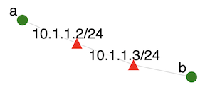

Overview
This exercise provides a gentle introduction for students into how to use SPHERE. It works well as a first assignment or in-class demonstration.
Introduction
SPHERE testbed provides students exclusive access to virtual machines, which they can organize into custom topologies. Operating systems, applications and configurations on nodes can also be customized. This material teaches you how to start experiments on SPHERE and how to use them for your class work.
Required background reading
Please read these guidelines before starting the exercise.
Assignment Instructions
Setup
If you don't have an account, follow the instructions here.
Tasks
Setting up your account
Follow steps 1-5 from class use guidelines to set up your account on SPHERE. These steps operate on your experiment development container (XDC), which serves as a gateway into your experiment.
Running the lab
Execute step 8 using twonode as your labname. It creates the experiment, allocates nodes and sets up virtual machines on them. Then it installs necessary applications on the experiment nodes.
This experiment sets up the topology shown below:

Ping
In your terminal window type:
ssh ato log into node a. You may see an alert asking you if you really want to connect. Answer "y" for "yes". Once logged into a type:
ping bThis sends a kind of "hello" message from a to b. You should see once-per-second replies from node b. Hold the CTRL key and press C to exit the program.
Iperf
In this task we will run iperf application, which measures bandwidth between two nodes.
On node a type:
iperf -sThis starts an iperf server. Open another browser window, log into SPHERE and follow steps 3, 4 and 6 from class use guidelines.
Then type:
ssh bto log into node b. Then type
iperf -c aAfter a few seconds the program should exit and report the bandwidth it measured.
Copying Files
Table below shows some useful commands in Linux.
| Command | Effect |
|---|---|
| ls dir | List contents of the directory dir |
| cat filename | Print contents of the file named filename |
| less filename | Print contents of the file named filename one screen at the time; press space to go to the next screen |
| touch filename | Create an empty file named filename |
| rm filename | Delete file named filename |
| sudo cmd | Execute command cmd as root |
Build on the previous example by storing the output of iperf into a file. On node b type:
iperf -c a > iperf.outOur goal now will be to transfer this file to your machine (desktop or laptop), and to transfer another file from your machine to one of your experimental nodes.
-
Install mrg Utility. If you haven't already, install
mrgutility on your machine by following instructions here. Note that on Mac OS the binary may not readily run, because it is unsigned. You can use instructions here to allow it to run.You can test that you have installed the utility successfully by typing
mrgin your Terminal window. If it prints a help page, the utility was successfully installed. Then typemrg config set server grpc.sphere-testbed.net mrg login yourusername (type your password when prompted) -
Copy a file from your experimental node to your machine. On your machine type (note that there is a space and a dot at the end of the command below; that means "copy the file into the file with the same name". You could replace the dot with a name like output.txt):
mrg xdc scp download -x xdc.yourusername b:iperf.out .Check that you can see
iperf.outin your local directory. How would you copy a file from a different remote directory (not your home directory) into a different local directory? -
Copy a file from your XDC to your machine. On your XDC (Jupyter Terminal window) type:
echo "Hello world" > hw.outOn your machine type:
mrg xdc scp download xdc.yourusername:hw.out .Check that you can see
hw.outin your local directory. -
Copy a file from your machine to your experimental node. On your machine type:
echo "Local file" > lf.out mrg xdc scp upload -x xdc.yourusername lf.out b:.Log into
bnode and check that you can seelf.out. -
Copy a file from your machine to your XDC. On your machine type:
echo "Local file take two" > lftt.out mrg xdc scp upload lftt.out xdc.yourusername:.Log into your XDC and check that you can see
lftt.out.
Stopping the Experiment
Find a terminal window you want to use. It can be a new window, obtained by following steps 3-6 from class use guidelines. Or it can be a window where you logged into a or b -- type exit to return to your XDC. Type:
stopexp twonodeThis will return all the resources to SPHERE. What can go wrong
- No token provided. This is the error visible in Merge GUI, once you log in and click on XDC or Experiments, or other buttons on the left. One workaround is to open https://launch.sphere-testbed.net in an incognito window. If that doesn't work, please close your browser completely, reopen it and then use an incognito window.
- startexp reports many errors. Commands used in
startexpare asynchronous. They may fail a few times before ultimately succeeding, because they may depend on an earlier asynchronous command. Letstartexprun its course and if it seems to produce errors by the end of its run, retry it once more. If it fails twice, please ask your instructor or TA for help. They may need to file a ticket with testbed ops. - runlab reports it cannot reach node a or b, or asks for a password. Wait a minute then re-run it. Sometimes
startexptakes a while to fully finish. - Nodes a and b cannot ping each other (or iperf fails). This points to a connectivity issue between a and b. You can run
stopexpto delete your experiment and then rerunstartexp. Keep trying until you succeed in getting a connected topology. - Jupyter terminal asks for a password. Read your instructions carefully and look at the command prompt. You may have tried
su - yourusernamewithout typingexitprior to that. If you are currently root, your command prompt will look like#. Otherwise it will look likeyourusername@xdc. In the second case, typingsu - yourusernamewill not work. - Connection error mentioning grpc.sphere-testbed.net. DNS on your XDC is broken. Edit the file
/etc/resolv/confto delete or comment out the line "nameserver 172.30.0.1". You will need to do this as root.
Submission Instructions
This exercise does not require you to submit anything to your instructor.